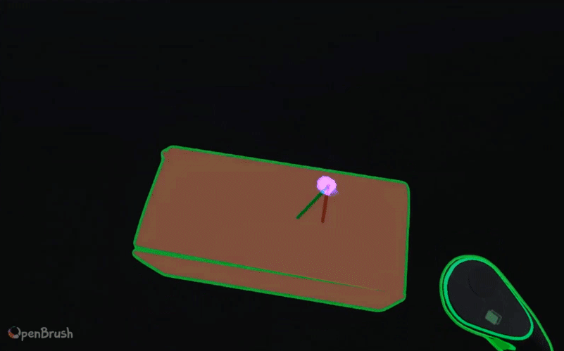

gyro-keyboard keyLayers[3] tilt = device.rotation.y index = int(tilt * 10) layer = keyLayers[index] if tap layer.sample(touch.pos) swipe-cursor if absolute offset = touch.y offset += touch.delta.y cursor = phone.pos + phone.up * offset * 3 touch-stretch-cursor stretch = dist(touch[0], touch[1]) dir = calibration origin = phone.pos + phone.rot * touch[0].xy cursor = origin + phone.rot * dir * stretch * 3 tilt-touch touch.xyz = phone.rot * touch.xy

extend cursor out of phone with swipe
using the distance between your thumbs extend a cursor out

tilt your phone to move the touch points in 3d space
tilt through the layers as you type, reducing travel and mistaps